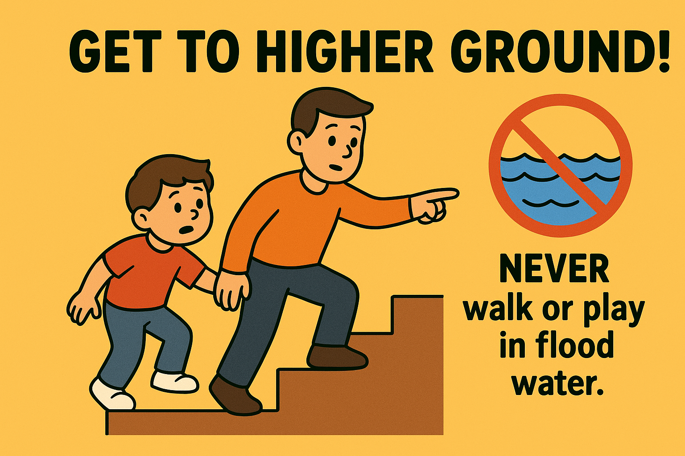

Flood Evacuation Drill!
Water, Water Everywhere!
Sometimes heavy rain can make the water rise too high. When we hear the flood warning, we need to move fast and safely! Let's practice moving to **Higher Ground!**
Step 1: LISTEN for the Siren!
When you hear the **flood alert** (siren, phone message, or grown-up's warning), stop playing right away! Always listen to an adult and be ready to move.

Step 2: Grab Your Go Bag!
Quickly grab your **Emergency Go Bag** that has snacks, water, and important things. Don't stop to grab toys! Remember: **Do NOT touch any electrical wires or switches!**
Step 3: Climb to Safety!
Follow the grown-up's directions to get to **higher ground** (like the second floor or a safe hill). **NEVER walk or play in flood water**, as it can hide dangers or move too fast!
Step 4: Stay Put and Wait!
Once you are on high ground, stay there until a grown-up says it is safe to come down. You are safe and smart! Keep an eye on everyone else, too.
You're a Water Safety Superstar!
Amazing job! Knowing what to do in a flood helps keep everyone safe. Tell your family and friends what you learned!